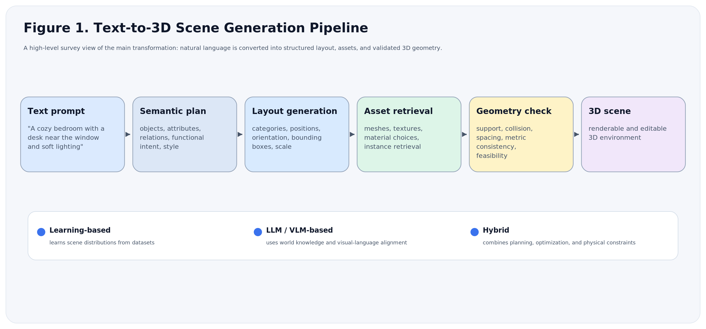
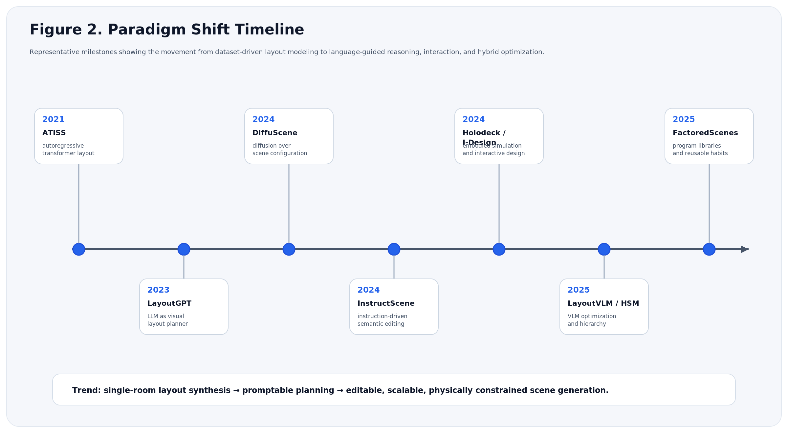
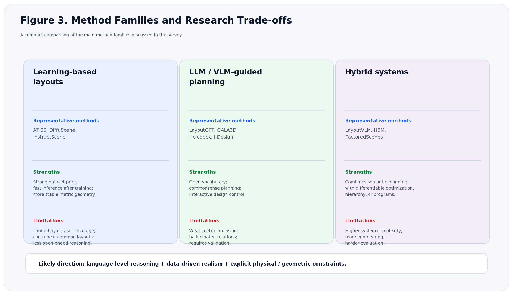

Text-to-3D Scene Generation
From natural language to structured, editable, and physically plausible 3D environments
1. Executive Summary
Text-to-3D scene generation studies how to convert natural-language prompts into complete 3D environments. Unlike text-to-3D object generation, which usually focuses on one isolated asset, scene generation must determine what objects should appear, where they should be placed, how they relate to each other, and whether the resulting environment is physically and functionally plausible.
The central trend is a shift from dataset-driven layout synthesis to language-guided planning and hybrid optimization. Early methods model indoor scenes as object sets or sequences. Diffusion methods improve global layout diversity. Instruction-driven, LLM-based, and VLM-based systems add open-vocabulary control, user interaction, and commonsense reasoning. However, exact metric geometry, physical validity, long-tail object categories, and large-scale scene consistency remain unsolved.

2. Problem Definition
Text-to-3D scene generation maps an unstructured text prompt into a structured 3D environment. A generated scene usually contains object categories, object attributes, spatial positions, orientations, sizes, mesh or asset identities, material information, and sometimes explicit relational or physical constraints.
3D Object Generation
Generates a single asset, such as a chair, table, or vase. The main problem is object geometry, texture, and shape fidelity.
3D Scene Generation
Generates a multi-object environment. The main problem is object composition, spatial layout, scene-level consistency, and editability.
This distinction matters because a scene is not a simple collection of independent objects. A bedroom, kitchen, or office is a coordinated system. Objects must satisfy functional relations, such as “chair near table,” physical relations, such as “lamp supported by desk,” and style-level relations, such as “modern furniture with consistent materials.”
3. Why This Field Matters
Embodied AI
Robots and agents need large numbers of diverse simulated environments for navigation, manipulation, and instruction following.
Gaming and Metaverse
Text-driven scene generation reduces the cost of building virtual worlds and makes environment creation accessible to non-experts.
Interior and Industrial Design
Designers can rapidly prototype layouts, compare alternatives, and iteratively edit spaces through natural language.
4. Core Challenges
Semantic Gap
A short prompt may imply many hidden requirements. For example, “a cozy study room” encodes object choice, lighting, layout, material, and style.
Data Scarcity
High-quality 3D scene datasets are much smaller than 2D image-text datasets. Manual annotation of 3D layout, geometry, and relations is expensive.
Layout Complexity
As the number of objects grows, the number of possible pairwise and higher-order relations grows quickly. Collisions and support constraints must be controlled.
Evaluation Difficulty
Visual quality, text alignment, physical plausibility, object diversity, and human preference are not captured by a single metric.
5. Scene Representations
Representation determines the search space of generation. It also defines what the model can learn, edit, and validate.
| Representation | Core Form | Strength | Limitation |
|---|---|---|---|
| Object-centric layout | Object category, position, orientation, bounding-box size | Compact and efficient for learning and optimization | Weak semantic and functional relations |
| Scene graph | Nodes as objects, edges as relations | Explicitly represents relations such as on, near, left of, inside | Must be translated into precise geometry |
| Procedural or hierarchical form | Room → area → furniture group → decoration | Scales better and follows human design logic | Requires strong decomposition and rule design |
| Hybrid symbolic-geometric form | Text plan, constraints, object poses, differentiable losses | Combines reasoning with physical validation | System complexity is higher |
6. Timeline and Paradigm Shift
The development of text-to-3D scene generation can be summarized as a movement from distribution learning to semantic reasoning and then to hybrid optimization. The field no longer only asks whether a model can imitate training layouts. It increasingly asks whether the model can follow detailed instructions, handle new concepts, and generate scenes that are physically valid and editable.

7. Dataset Landscape
Datasets define what learning-based methods can model. Synthetic datasets provide cleaner object poses and richer layout labels. Real scanned datasets provide more realistic geometry and sensor noise. The gap between them is a major reason why generalization remains difficult.
| Dataset | Type | Typical Use | Main Issue |
|---|---|---|---|
| 3D-FRONT | Synthetic indoor scenes | Training and evaluating indoor layout synthesis | Synthetic-to-real domain gap |
| ScanNet | Real RGB-D scans | Semantic segmentation, reconstruction, scene understanding | Noisy scans and incomplete geometry |
| Objaverse-style asset collections | Large 3D object repositories | Asset retrieval and scene population | Uneven quality and inconsistent metadata |
8. Learning-based Methods
Learning-based methods estimate plausible scenes from training data. Their strength is that they can learn common object co-occurrence and layout statistics. Their limitation is that they are bounded by dataset coverage and can struggle with rare or unusually specific prompts.
ATISS: Autoregressive Transformers for Indoor Scene Synthesis
ATISS uses a transformer-based autoregressive framework for indoor scene synthesis. It predicts object attributes such as category, size, position, and orientation while conditioning on an existing partial scene. It is important because it showed that transformer architectures can generate coherent indoor layouts with object-set structure rather than a rigid object sequence.
Takeaway: strong baseline for layout-level scene generation; efficient and coherent, but still limited by sequential generation and training-set coverage.
DiffuScene: Diffusion for Generative Indoor Scene Synthesis
DiffuScene formulates scene synthesis as denoising in scene-configuration space. Instead of placing objects one by one, it denoises a noisy set of object properties into a complete scene. This reduces sequential error accumulation and can better model global multi-object dependencies.
Takeaway: diffusion gives a stronger generative prior for diverse and globally consistent layouts.
InstructScene: Instruction-driven Scene Synthesis
InstructScene shifts the task from one-shot generation to instruction-following generation. It combines semantic graph priors with layout decoding, allowing text commands to guide scene synthesis and editing.
Takeaway: controllability becomes a central criterion, not only visual plausibility.
LayoutVLM and FactoredScenes
More recent methods use vision-language models, differentiable optimization, or reusable program libraries to close the gap between language-level planning and geometric validity. LayoutVLM uses VLM knowledge with optimization to improve physical plausibility. FactoredScenes models reusable placement habits or programmatic substructures.
Takeaway: the field is moving toward interpretable, modular, and constraint-aware generation.
9. LLM/VLM-based and Interactive Methods
Large language models introduce world knowledge, commonsense reasoning, and open-vocabulary control. They are useful for planning object lists, generating scene graphs, writing structured layouts, and supporting interactive design. However, they often need geometric solvers or differentiable constraints because language models alone do not guarantee collision-free or physically valid 3D coordinates.
LayoutGPT and GALA3D
LayoutGPT uses LLMs as visual planners that output structured layouts. GALA3D combines layout-guided control with 3D Gaussian representations for complex text-to-3D generation.
Holodeck
Holodeck targets language-guided generation of embodied AI environments. It uses LLM-driven commonsense planning and object assets to create diverse simulated spaces.
I-Design
I-Design treats interior design as a conversational process. It uses LLM agents to convert natural-language requirements into scene graph designs and relative object relationships.
Hierarchical Scene Models
Hierarchical methods decompose large scenes into global structure, major furniture, and fine details. This helps control complexity and improves scalability.
10. Method Comparison

| Criterion | Learning-based | LLM/VLM-based | Hybrid |
|---|---|---|---|
| Text flexibility | Moderate | High | High |
| Metric geometry | Relatively strong | Weak without constraints | Strong if optimized |
| Open vocabulary | Limited by categories | Strong | Strong |
| Physical plausibility | Learned implicitly | Often unreliable | Can be explicit |
| Scalability | Good for constrained rooms | Good for planning, weaker for coordinates | Promising but complex |
11. Future Research Questions
A high-quality survey should not only describe existing papers. It should also infer what problems remain open and which directions are likely to define the next stage of the field. The following questions summarize the most important future directions.
- How can scene generators combine exact geometry with open-ended language? Current LLMs reason well about function and style, but they are weak at precise metric layout. Future systems may need explicit geometric solvers, differentiable collision constraints, and physically grounded representations.
- How can models handle long-tail, fine-grained, personalized prompts? A useful system should not only generate a generic bedroom. It should handle requirements such as hobbies, age, accessibility, cultural style, and object-level preferences.
- How can generation scale from one room to buildings or city blocks? Large environments require memory, hierarchy, global consistency, and efficient long-range relation modeling.
- How should physical common sense be evaluated? Visual plausibility is not enough. Objects must be supported, reachable, non-overlapping, and consistent with material and functional constraints.
- Can interactive systems learn from user corrections? Real design is iterative. The next generation of systems should adapt to edits and feedback rather than treating each prompt independently.
12. Conclusion
Text-to-3D scene generation has evolved from layout synthesis into a broader problem of language-guided world construction. Learning-based methods provide data-driven realism and efficient layout priors. LLM/VLM-based methods provide flexible semantic reasoning and interactive control. The most promising direction is a hybrid system: language models plan, generative models synthesize, and geometric or physical optimizers validate the result.
The field is therefore moving toward editable, scalable, and physically plausible world generation. The core challenge is no longer only “Can a model generate a scene?” but “Can it generate the right scene, for the right instruction, under real spatial constraints?”
References and Reading List
- ATISS: Autoregressive Transformers for Indoor Scene Synthesis
- DiffuScene: Denoising Diffusion Models for Generative Indoor Scene Synthesis
- InstructScene: Instruction-Driven 3D Indoor Scene Synthesis with Semantic Graph Prior
- LayoutGPT: Compositional Visual Planning and Generation with Large Language Models
- GALA3D: Towards Text-to-3D Complex Scene Generation via Layout-guided Control
- Holodeck: Language Guided Generation of 3D Embodied AI Environments
- I-Design: Personalized LLM Interior Designer
- LayoutVLM: Differentiable Optimization of 3D Layout via Vision-Language Models
- FactoredScenes: From Programs to Poses